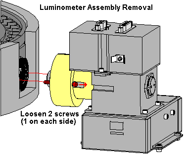

This procedure describes how to replace the luminometer assembly.
Perform this procedure when the luminometer requires replacement.
These symptoms indicate that the luminometer may need to be replaced:
The HV control voltage adjustment can no longer keep the DCF within specification.
The raw dark counts with covers closed are above 150 RLU (not caused by light leakage, spills, or contamination) when read in the
Diagnostics
>
Device Diagnostics
>
Luminometer
>
Read
screen.
There are poor CVs on unwashed system check that are not caused by fluidics issues.
These acronyms appear in this document:
DCF = Drift Correction Factor
RLU = Relative Light Unit
LED = Light Emitting Diode
PMT = Photo Multiplier Tube
HV = High Voltage
Warning: The photomultiplier tube (PMT) is a very sensitive photon measuring device. Any background or extraneous light coming into contact with a powered PMT can saturate the PMT and reduce the gain. This reduces the performance of the PMT, and it can take a long time for the PMT to recover or it might never recover fully. A magnetic field close to a powered PMT also reduces the performance of the PMT. The magnetic field causes the electrons to follow a curved path instead of moving in a straight line. When you are performing service in the area of the luminometer, observe the following rules.
Never shine a flashlight around the luminometer while the PMT is powered on.
Never bring a strong magnetic field close to the luminometer while the luminometer is powered on.
Before removing the covers on the analytical module, turn off the power to the PMT.
Cap the PMT whenever it is removed from the analytical module.
Shut down the DxI instrument.
Select
Configure
> PC Admin > System Admin > Shutdown Instrument to exit the software in preparation for powering off the instrument.
Enter the password
Access2Support, and then select
OK.
At the pop-up
You must now turn off the instrument, using the instrument power switch, select
OK.
After the instrument software has shut down, turn off the instrument at the power switch.
Remove the luminometer assembly.
Disconnect the luminometer cables.
Lumi Control (15-pin)
Signal Out (9-pin)
H.V. Control
Ground
Loosen the two 7/64-in screws holding the luminometer assembly to the analytical module housing, and then remove the luminometer from the analytical module.
Note:
The two mounting screws are located inside the yellow foam housing area of the luminometer.
Support the luminometer assembly while loosening the screws
If necessary, remove the Framus instrument cover to provide easier access to the luminometer mounting screws. Refer to the Removing the Framus step of the
RS: Removing Reagent Storage Module procedure.

Install the luminometer.
Caution: Do not expose the ;uminometer lens to direct light which may affect the output (dark counts) or damage the photomultiplier tube in the luminometer.
Remove the protective lens cover from the new luminometer.
Inspect the luminometer lens and ensure that is free of lint, dust or other debris.
Insert the new luminometer onto the receptacle on the analytical module.
Insert and tighten the two luminometer mounting screws.
Connect the luminometer cables.
Lumi Control (15-pin)
Signal Out (9-pin)
H.V. Control
Ground
Close the instrument covers.
Power on the instrument and allow it to initialize.
Adjust the luminometer output after installing a new luminometer or a new analytical module.
Warning: All customer assays must be calibrated after replacing the luminometer or saving a new LED target.
View the RLU counts in the Current Counts field, and confirm that the dark counts are less than 100.
Dark count refers to the luminometer RLU count read when all covers are closed, there is no sample, and the LED reference is off.
Select
Enable LED.
An RLU count of approximately 1 million is common when reading the LED.
Using the directional keys in the
High Voltage Control window, adjust the control voltage so that the Current Counts RLU matches the LED Target within 2%.
Note:
If this module is a new analytical module (new luminometer and new LED), then enter the H.V. Control Value listed on the module documentation and do not adjust the value to match the LED Target Value. The stored LED Target Value is from the previous analytical module.
The H.V Control Voltage can be typed into the
High Voltage Control window. Use the
Arrow key or the
Enter key to complete the number entry.
Allow the Current Mean to stabilize so that the Current %CV is less than 0.20.
Select
Cancel.
Select
Save High Voltage Control, and then select
Yes to the Save new H. V. Control value pop-up.
Select
Save LED Reading, and then select
Yes to the
Save new LED Reading pop-up.
Select
Enable LED to power off the LED.
Press the
[Esc]key to exit the luminometer diagnostics.
Verify instrument operation after adjusting the luminometer.
Ensure that all temperatures are stabilized and within specification.
Perform four cycles of substrate probe prime and ten cycles of dispense probe prime. Observe the wash area during priming and ensure that there are no fluid leaks, kinked or pinched tubing, or vessel handling issues.
Perform a System Check.
If the substrate mean RLU value is not within specification (5000 to 9000), then evaluate the system for substrate contamination.